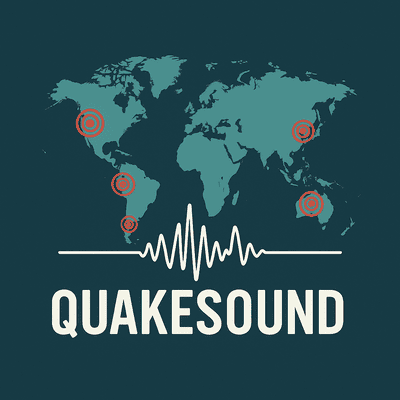

QuakeSound is a generative soundscape web application that transforms real-time earthquake data into an ambient, musical soundscape.
Each earthquake plays a layered tone where:
The app uses the USGS Earthquake GeoJSON Feed and visualizes seismic activity on a dark Leaflet.js map (CartoDB Dark Matter tiles), with markers color-coded by magnitude (green → yellow → orange → red) and an expanding ripple animation on each sound trigger. Sounds are synthesized in real time with the Web Audio API using layered oscillators, shaped reverb, and dynamic gain scaling.
This project was created by Alex Amor and inspired by an exhibit at the Science Museum of Minnesota. It reflects a curiosity for turning real-world phenomena into interactive applications through sound, spatial visualization, and open-source tools. The development also demonstrates how modern AI can accelerate creative problem-solving, experimentation, and bring long-standing ideas to life.